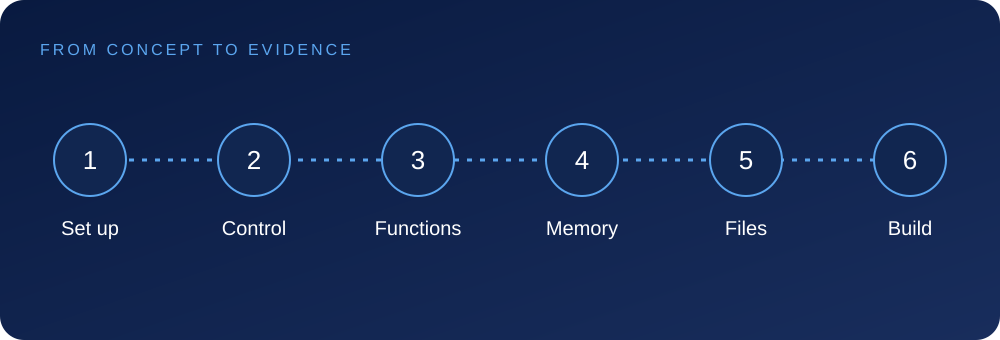

Concepts, worked examples, assignments and a coherent course project.
SamkhyaAcademy
COURSE GUIDE · 2026
Who it is for · What you will learn
Your next capability.
Learn syntax, control flow, functions, arrays, pointers, structures and file handling through focused exercises and a small terminal project.
Write and debug structured C programs
Use functions, arrays, pointers and structures
Work safely with files and memory
Complete a command-line capstone
Audience
Programming beginners
Engineering students
Learners preparing for C++ or embedded systems
Prerequisites
No prior programming experience required

One curriculum, three connected views
This guide summarizes the same modules and lessons shown on the course overview and in the learning workspace. The next pages explain the scope and practical evidence for every module.
SamkhyaAcademy
COURSE GUIDE · 2026
Detailed module curriculum · 1-2
Build the foundations.
The module names, lesson sequence and evidence below match the course learning workspace.
1Programming and C Foundations
Build a small temperature-reporting program and learn how source becomes an executable.
1.1Set up the C toolchainThe compiler translates C source and the linker resolves referenced functions.
1.2Variables and data typesA variable has a type, a value and a lifetime.
1.3Operators and expressionsOperators combine values, but their operand types influence the result.
1.4Input and outputFormatted output requires conversion specifiers that match the arguments.
You will produce: Compilable source, command transcript and input validation cases.
2Control Flow and Functions
Turn a one-off calculation into a reusable, testable function.
2.1ConditionsA condition selects a path based on an expression.
2.2LoopsA loop needs an initial state, continuation condition and progress toward termination.
2.3Functions and scopeA function has an input contract, output contract and local state.
2.4Debugging fundamentalsDebugging is hypothesis testing.
You will produce: Function contract and boundary-case test log.
Practice is part of every module
Work through the example, record your reasoning, complete the module assignment and compare your work with the review criteria.
SamkhyaAcademy
COURSE GUIDE · 2026
Detailed module curriculum · 3-4
Apply, integrate and demonstrate.
The module names, lesson sequence and evidence below match the course learning workspace.
3Arrays, Strings and Pointers
Represent a fixed set of readings without losing track of size and lifetime.
3.1ArraysAn array stores elements contiguously.
3.2StringsA C string is a character sequence ending in a null character.
3.3Pointer foundationsA pointer stores an address associated with a type.
3.4Pointers with arraysPointer arithmetic is meaningful within an array object and its one-past position.
You will produce: Array/string bounds worksheet and read-only function.
4Structures, Files and Capstone
Assemble a terminal record manager with explicit ownership and reliable file handling.
4.1Structures and enumsA structure groups related fields into a value; an enum names a finite set of states.
4.2File handlingOpening, reading, writing and closing a file can fail.
4.3Memory safety reviewReview every buffer length, object lifetime and allocation owner.
4.4Terminal application capstoneThe capstone joins input validation, functions, records and persistence.
You will produce: Terminal application, reproducible tests and project README.
Practice is part of every module
Work through the example, record your reasoning, complete the module assignment and compare your work with the review criteria.
SamkhyaAcademy
COURSE GUIDE · 2026
Projects and working methods
Command-line record manager
Use functions, structures and file operations to create a small terminal application and explain how its data moves through memory.
Readable C source files
Input and boundary-case tests
Memory and file-handling explanation
Tools and methods
C compilerVS CodeGit
Tools are learning choices, not partner endorsements.
Inside module 1: a worked example
#include <stdio.h>
int main(void) {
int count = 3;
double total = 71.0;
printf("Average: %.2f\n", total / count);
return 0;
}
// Compile: cc -Wall -Wextra report.c -o report
The output is Average: 23.67. Replacing total with an integer changes the division before formatting, so the intermediate result must be inspected.
How your work is reviewed
Show the artifact, explain your decisions, test the stated assumptions and identify limitations. Module assignments build toward the course project rather than replacing it with a single example.
SamkhyaAcademy
COURSE GUIDE · 2026
Delivery, completion and next steps
Know what you are signing up for.
Delivery
Self-paced online · 6-8 weeks
Confirm current schedule, cohort arrangements and enrollment terms with the academy.
Completion requirements
Complete the required coursework and module assignments, and pass the course assessment. A course completion certificate is available after those requirements are met.
What the learning workspace includes
Follow the modules
Expand the curriculum and open the exact lesson you need.
Apply the concepts
Read explanations, inspect examples and complete module practice.
Keep your evidence
Use resources, notes, discussion and assignments to support your learning.
Learning commitments, not outcome guarantees
Completion is not a placement, employment or performance guarantee. The course project is educational evidence; any production use requires appropriate review and validation.
Start with the curriculum. Continue with the first lesson.
Review your starting point, download this guide and explore the connected course experience.
Client-review edition. The static learning workspace saves demonstration progress locally; production enrollment, assessment, communications and certificate issuance are not connected.